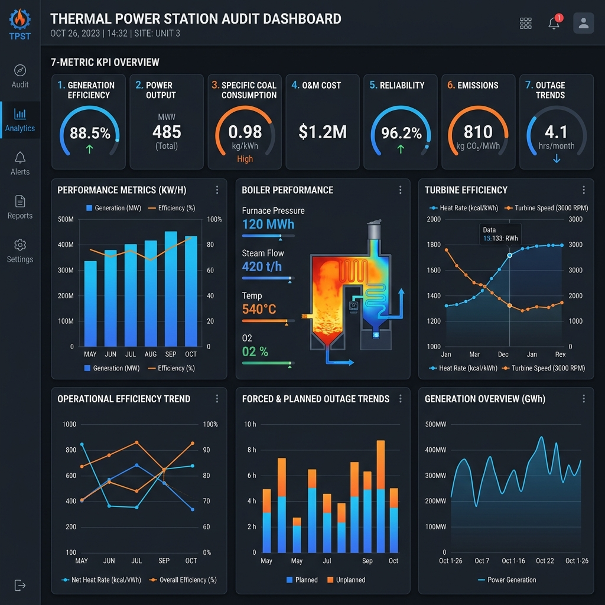
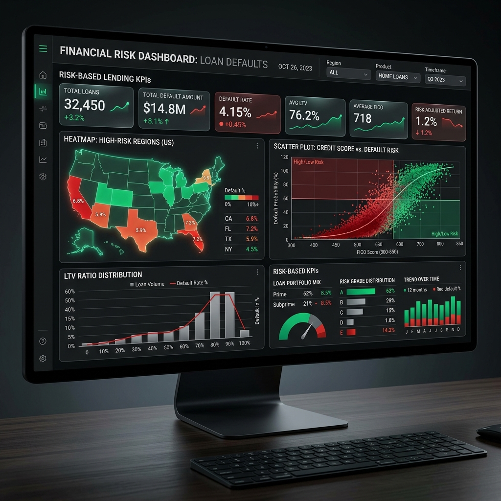

Performance & Reliability Audit of NTPC Thermal Power Stations
Public
• Analyzed 7,500+ records to audit performance of NTPC thermal power stations
• Identified efficiency gaps, outage trends, and key risk factors affecting generation
• Designed a 7-metric KPI framework to evaluate capacity and operational performance
• Built an interactive dashboard for trend analysis and data-driven decision-making

Loan Default Risk
Public
• Analyzed borrower datasets to identify key factors driving loan defaults
• Evaluated relationships between credit score, LTV ratio, and default risk
• Identified high-risk regions despite lower loan distribution for improved targeting
• Developed interactive dashboards to support data-driven, risk-based lending decisions
Supplier Quality Analysis
Public
• Analyzed borrower datasets to identify key factors driving loan defaults
• Evaluated relationships between credit score, LTV ratio, and default risk
• Identified high-risk regions despite lower loan distribution for improved targeting
• Developed interactive dashboards to support data-driven, risk-based lending decisions